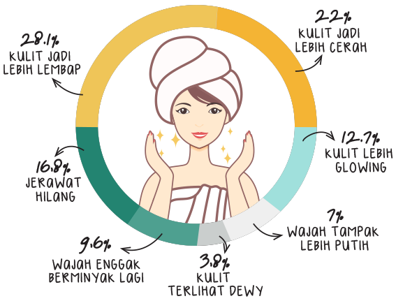

Dari polling yang dilakukan cewekbanget.id oleh 1.000 responden cewek Indonesia
dari Banda Aceh hingga Bali, terdapat
“Antusiasme terhadap skincare Korea di Indonesia bertumbuh pesat dari tahun ke tahun. Media sosial juga menjadi pendukung populernya skincare Korea di Indonesia karena banyak tanggapan positif baik soal manfaat dan kandungan dari skincare Korea. Meningkatnya kesadaran masyarakat akan pentingnya merawat kulit sejak dini bikin skincare Korea semakin populer.”
Marketing & PR Executive innisfree Indonesia, Wulandari Fajarriani
Skincare Korea dianggap bisa mengatasi berbagai permasalahan kulit, antara lain:
Berdasarkan polling, perubahan yang dirasakan responden saat memakai skincare Korea adalah:
“Pertimbangannya kalau beli skincare Korea karena melihat kandungannya dan kegunaannya, dan dari segi harga. Aku suka skincare Korea karena merasa lebih aman karena kebanyakan produknya terbuat dari bahan-bahan alami dan teksturnya yang water-based. Alasan lain, aku suka skincare Korea karena memang mencari produk yang bisa melembapkan. Kalau pakai skincare Korea, wajah aku kelihatan lebih glowing waktu bangun tidur.”
Audina (21 tahun - Jakarta)
Brand yang jadi favorit responden cewekbanget.id adalah
Dua brand ini punya paling banyak penggemar karena mudah didapat di counter resmi yang tersedia di berbagai pusat perbelanjaan yang tersebar di Indonesia.
Produk skincare Korea yang paling sering dibeli adalah
Kelebihan dari skincare Korea yang paling menonjol adalah kemampuan melembapkannya yang sangat baik. Selain itu, sheet mask merupakan salah produk skincare Korea yang harganya relatif terjangkau, mudah didapat, dan punya banyak varian sesuai kebutuhan kulit.
“Fokus skincare Korea yang aku suka ada pada hydrating. Kulitku sensitif, jadi aku lebih memilih produk yang kandungan alkoholnya enggak tinggi. Aku juga menghindari produk yang mengandung paraben, parfum, dan pewarna. Seleb Korea yang menjadi brand ambassador juga meningkatkan minat beli, terutama Song Hye Kyo yang kulitnya bagus banget! Ha-ha-ha.”
Nafisa Salma (21 tahun - Jakarta)
Budget yang dikeluarkan untuk membeli skincare adalah
Skincare Korea juga memiliki kandungan yang unik dan terbuat dari bahan-bahan alami sehingga banyak disukai masyarakat dan sebagian besar responden tertarik. Kandungan skincare Korea yang paling diminati yaitu
“Skincare Korea mengandung bahan-bahan yang alami dan ke depannya akan terus berkembang mulai dari formulanya yang lebih simpel dan semakin disesuaikan dengan jenis kulit.”
Senior Public Relation Nature Republic, Sinta
“Selain bahannya, penting juga untuk kita memahami jenis kulit kita dan bahan dasar dari skincare yang kita pilih, baik itu berbentuk krim, gel, lotion, atau oil. Jika kulit kita cenderung berminyak, lebih baik memilih skincare dengan bentuk gel atau lotion. Sedangkan untuk kulit yang kering, krim atau oil adalah pilihan yang tepat.”
“Perlu diingat, kita enggak bisa menggeneralisasi bahwa semua skincare natural itu bagus dan lebih aman. Produk yang mengandung essential oil natural seperti lavender, peppermint, dan tea tree oil dapat menyebabkan iritasi pada beberapa orang. Bahan natural yang jadi favorit banyak orang, aloe vera, juga belum tentu “aman” jika kita punya alergi terhadapnya.””
“Bahan dasar natural terbilang “aman” karena bisa digunakan bebas tanpa harus dalam pengawasan dokter. Tapi untuk masalah kulit tertentu yang butuh active ingredients dosis tinggi, skincare natural tidak cukup.”
PENGALAMAN BEAUTY VLOGGER:
NATYA SHINA DARI STEP BY STEP ID
“Aku pertama kali pakai skincare Korea sekitar dua tahun lalu karena tertarik sama 10 step Korean Skincare Routine dan selalu penasaran kenapa kulit orang Korea bisa selalu cerah, dewy, dan terlihat lebih muda dari usia yang sebenarnya.”
Sampai saat ini produk andalannya adalah serum dan toner dari Nacific, essence dan steam cream dari Benton, dan Laneige Water Sleeping Mask.
PERTIMBANGAN NATYA SHINA
DALAM MEMBELI SKINCARE KOREA
Skin concerns yang dimiliki oleh Natya adalah komedo, kulit kering karena paparan AC, dan kulit kusam karena polusi. Ia berharap dengan memakai skincare Korea kulitnya bisa lebih cerah dan lembap, serta tidak cepat keriput.
Sebelum mencoba suatu produk, Natya sering membaca honest reviews dari blogger/vlogger lain. Namun, peran seleb Korea sebagai brand ambassador juga bisa menambah minat belinya. Tidak semua produk yang dicoba cocok di kulit Natya, tapi dengan mencoba berbagai skincare Korea, Natya bisa lebih mengenal kondisi kulitnya. Salah satu kelebihan yang ia suka adalah kemampuan melembapkan yang lebih dari skincare lain, yaitu skincare dari western dan lokal.
PENGALAMAN BEAUTY VLOGGER:
VERONICA ONG
“Aku pakai skincare Korea sejak 2016 karena setelah aku cari tahu skincare Korea sebagian besar berbahan dasar natural. Harapanku dari memakai skincare Korea adalah kulit yang mulus dan glowing seperti orang Korea.”
PERTIMBANGAN VERONICA ONG
DALAM MEMBELI SKINCARE KOREA
Memiliki jenis kulit yang sensitif, Veronica memilih skincare Korea karena banyak yang bahan dasarnya natural. Ia merasa risiko untuk tidak cocok lebih rendah. Meskipun tidak dipungkiri pernah ada produk-produk yang tidak cocok juga.
Pertama-tama, bersihkan makeup dan kotoran wajah dengan makeup remover atau oil cleanser.
Pastikan kita membersihkan wajah hingga ke dalam pori-pori sehingga perlu melakukan double cleansing menggunakan facial wash atau foam.
Mengeksfoliasi wajah penting banget untuk menghilangkan sel-sel kulit mati yang menempel pada kulit. Tapi rutinitas mengeksfoliasi wajah ini enggak perlu dilakukan setiap hari, apalagi buat yang memiliki kulit sensitif. Lakukan dua kali seminggu supaya kulit halus dan terlihat cerah.
Toner berguna untuk mengembalikan keseimbangan pH pada kulit setelah membersihkan wajah. Sehingga kulit akan siap menerima produk skincare berikutnya dengan baik.
Bisa dibilang essence merupakan rahasia glowing cewek-cewek Korea. Essence terbuat dari bahan-bahan alami seperti ekstrak buah-buahan yang dapat menutrisi dan memperbaiki struktur kulit yang rusak.
Serum atau ampoule merupakan skincare yang dapat langsung mengatasi masalah kulit seperti pigmentasi, kerutan, jerawat dan warna kulit yang enggak merata.
Sheet mask merupakan salah satu inovasi kecantikan Korea yang paling booming. Masker praktis yang dapat merawat kulit sekaligus membuat rileks. Gunakan minimal 1-2 kali seminggu.
Karena kulit di area mata sangat tipis sehingga kita harus rutin merawatnya dengan selalu menggunakan krim mata yang berfungsi memberikan perlindungan dan hidrasi pada kulit.
Pelembap sangat penting jika kita ingin mendapatkan kulit yang dewy dan glowing seperti seleb Korea. Pelembap memiliki berbagai macam jenis seperti emulsion, lotion, gel atau krim yang bisa disesuaikan dengan jenis kulit kita.
Last but not least, mulai sekarang jangan pernah keluar rumah tanpa menggunakan sunscreen atau sunblock supaya kulit selalu terlindungi dari sinar UV yang dapat merusak kulit.
(sumber: sokoglam.com)